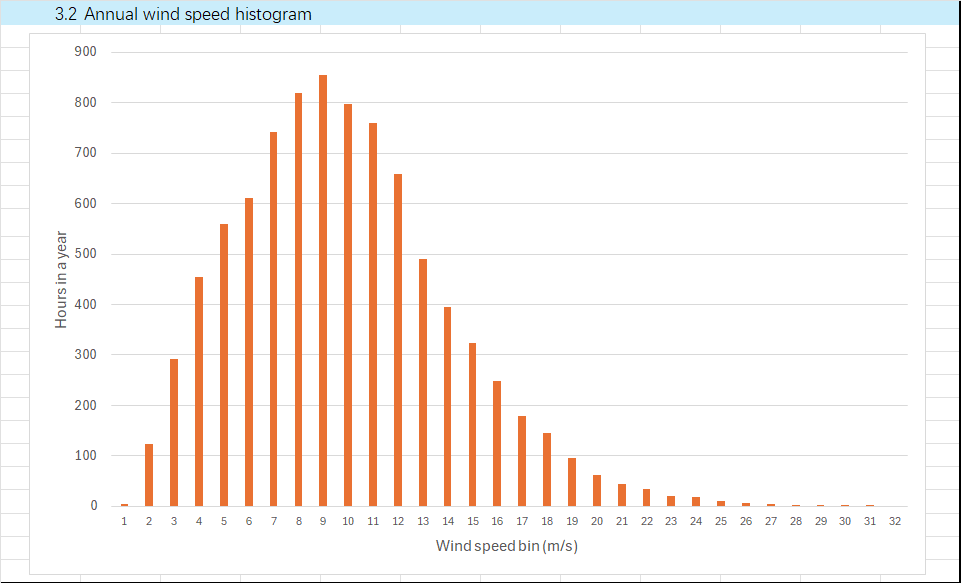
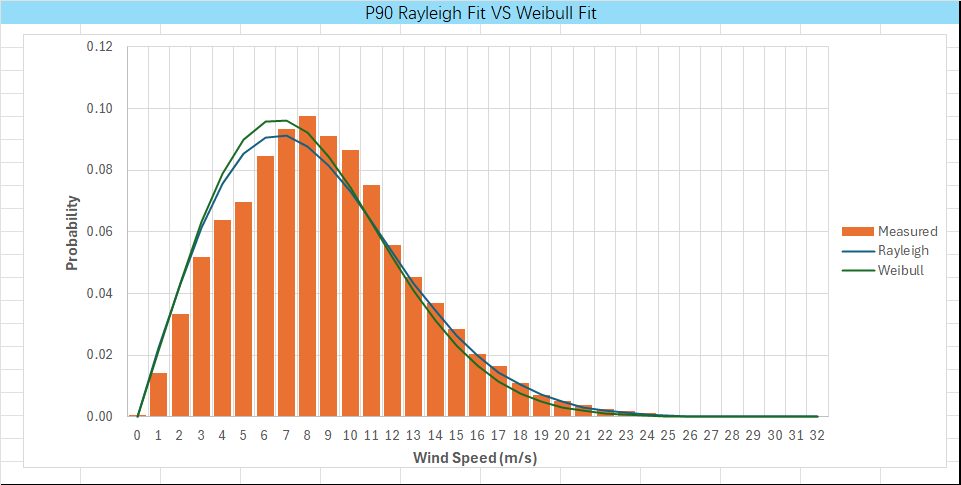
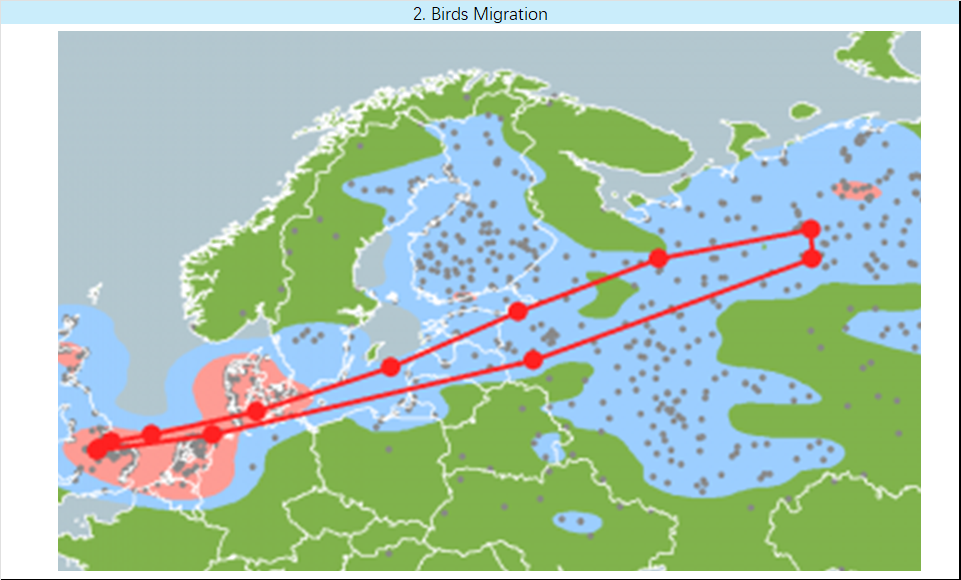

84 MW新增装机容量new capacity
7 x 12 MW新增风机方案new turbine scheme
220 m转子直径rotor diameter
8.69 m/s长期平均风速long-term mean wind speed
8.21 m/sP90 年平均风速P90 annual wind speed
225° SSW主导风向prevailing direction
R² 0.874MCP 最优参考站best MCP reference
8.94%代表性尾流损失representative wake loss
项目概览（Situation, Task, Action, Result, STAR）Project Overview (STAR)
- Situation
- 既有 Blyth Offshore Demonstrator Wind Farm 已建成 5 台 Vestas V164 风机，业主希望扩建一个高收益的近海风电项目，并要求新增容量超过 75MW、候选风机单机容量 11-14MW、转子直径小于 230m。 The existing Blyth Offshore Demonstrator Wind Farm has five Vestas V164 turbines. The owner wanted a profitable extension with more than 75MW of new capacity, using 11-14MW turbines with rotor diameter below 230m.
- Task
- 需要提交可复核的计算表、带注释的风机布置图和 5 分钟展示材料，覆盖风资源评估、长期风速估计、年发电量估算、尾流损失、遮影、噪声和环境影响。 The deliverables required an auditable workbook, annotated turbine-layout map and short presentation covering wind resource, long-term wind speed, energy capture, wake loss, shadow flicker, noise and environmental considerations.
- Action
- 我基于 10 分钟风速数据完成风切变、湍流强度和风向统计；用 Boulmer 气象站建立 MCP 相关关系；用十年数据估计 120m 高度长期风速与 P90 风速；选取 7 台 GE Vernova GE Haliade-X 12MW 风机，并用主导风向 225° 的高斯尾流模型评估有效风速下降。 I processed 10-minute wind data for shear, turbulence and directionality; selected Boulmer as the MCP reference station; estimated long-term and P90 wind speed at 120m height using decade-scale data; selected seven GE Vernova GE Haliade-X 12MW turbines; and evaluated effective wind-speed reduction with a Gaussian wake model under the 225 degree prevailing wind direction.
- Result
- 最终方案新增 84MW 容量，满足课程 brief 的容量和转子直径约束；Boulmer 与 Blyth 的相关性最高（R²=0.874）；估计长期平均风速约 8.69m/s，P90 年平均风速约 8.21m/s；代表性尾流分析显示总功率从 61.19MW 降至 55.72MW，尾流损失约 8.94%。 The final scheme added 84MW and met the capacity and rotor-diameter constraints. Boulmer had the strongest correlation with Blyth (R²=0.874), long-term mean wind speed was about 8.69m/s, P90 annual wind speed was about 8.21m/s, and the representative wake case reduced total power from 61.19MW to 55.72MW, giving about 8.94% wake loss.
风资源与 MCP 逻辑Wind Resource and MCP Logic
- 测量期平均风速为 8.70m/s，平均湍流强度约 7.8%；在 8.26m/s 风速区间内，湍流强度约 7.0%，可归入国际电工委员会 IEC 61400-1 的 I.C 类风况判断。The measurement-period mean wind speed was 8.70m/s and average turbulence intensity was about 7.8%; around the 8.26m/s bin, turbulence intensity was about 7.0%, supporting an IEC 61400-1 Class I.C assessment.
- 风切变计算同时比较对数律和幂律。对数律得到 120m 高度风速约 9.98m/s，幂律得到约 8.85m/s；项目后续采用较保守的长期平均风速和 P90 风速进行产能与风险判断。Wind shear was checked with both logarithmic and power-law methods. The log-law estimate at 120m was about 9.98m/s, while the power-law estimate was about 8.85m/s; later energy and risk checks used more conservative long-term and P90 values.
- 在多个周边气象站中，Boulmer 与 Blyth 的日均风速相关性最好，线性相关 R²=0.874，高于 0.8 的常用筛选门槛，因此被选为 MCP 参考站。Among nearby weather stations, Boulmer had the strongest daily-average wind-speed correlation with Blyth, with R²=0.874, above the common 0.8 screening threshold, so it was selected as the MCP reference station.
- 十年尺度估算得到 120m 高度十年平均风速约 8.55m/s，Blyth 长期平均风速约 8.69m/s，P90 年平均风速约 8.21m/s。P90 用于表达保守年景下仍可能达到的风资源水平。The decade-scale estimate gave about 8.55m/s at 120m, the Blyth long-term mean wind speed was about 8.69m/s, and the P90 annual wind speed was about 8.21m/s. P90 expresses the wind resource expected to be exceeded in conservative years.
风机选型与容量配置Turbine Selection and Sizing
- 候选机型为 GE Vernova GE Haliade-X 12MW，单机额定功率 12MW，7 台合计 84MW，超过 75MW 扩建目标，同时减少海上运维对象数量。The selected model was the GE Vernova GE Haliade-X 12MW. Seven turbines provide 84MW, exceeding the 75MW extension target while limiting the number of offshore assets to maintain.
- 关键参数包括 220m 转子直径、110m 叶片半径、138m 轮毂高度、248m 叶尖高度、38,000m2 扫掠面积、3m/s 切入风速、10.103m/s 额定风速、34m/s 切出风速和最大功率系数 Cp=0.50。Key parameters include 220m rotor diameter, 110m blade radius, 138m hub height, 248m tip height, 38,000m2 swept area, 3m/s cut-in speed, 10.103m/s rated speed, 34m/s cut-out speed and maximum power coefficient Cp=0.50.
- 风机功率曲线采用分段逻辑：低于切入风速或高于切出风速输出为 0；低于额定风速时按 0.5ρAv3Cp 估算并限制不超过额定功率；高于额定风速后按 12MW 限幅。The power curve used a piecewise model: zero output below cut-in or above cut-out, 0.5ρAv3Cp under rated speed capped at rated power, and a 12MW limit above rated speed.
- 布置方案给出 N1-N7 坐标，并结合原有 T1-T5 位置检查 5D-7D 间距、主导风向上的前后排遮挡、海岸居民点距离和航海图可用水域。The layout defined N1-N7 coordinates and checked them against existing T1-T5 turbines for 5D-7D spacing, upstream-downstream overlap under prevailing wind, nearby coastal receptors and available offshore chart area.
约束条件与场址判断Constraints and Site Judgement
- 遮影距离按 10 倍转子直径筛选，新风机 220m 转子对应 2200m 最大遮影检查半径。由于方案位于近海，主要居民点不在关键遮影影响范围内。Shadow flicker was screened using 10 rotor diameters, giving a 2200m check radius for the 220m rotor. Since the layout is offshore, main residential receptors fall outside the critical shadow-flicker area.
- 安全退距采用 1.1 倍最大叶尖高度，248m 叶尖高度对应 272.8m 退距。近海方案基本不受道路和架空线路退距限制，但该数值用于说明工程筛选口径。Set-back distance used 1.1 times maximum tip height, so 248m tip height gives 272.8m. Offshore siting avoids most road and overhead-line constraints, but the value documents the engineering screening basis.
- 噪声按声功率级、距离衰减和大气吸收计算，对 Blyth Beach、Port of Blyth、Car Park、Light House 和 Shanti Art 等受体进行对比。新增风机后各点总声压级仍低于 35dB(A) 判断线。Noise was calculated from sound power level, distance attenuation and atmospheric absorption for receptors including Blyth Beach, Port of Blyth, Car Park, Light House and Shanti Art. Total sound pressure levels after adding turbines remained below the 35dB(A) screening line.
- 环境复核覆盖打桩水下噪声、海鸟觅食和迁徙风险、以及施工碳排放和材料污染等议题。网页展示这些内容作为前期场址筛查，而不是替代正式环境影响评价。Environmental review covered piling underwater noise, seabird foraging and migration risk, construction carbon and material-pollution topics. The page presents these as early site-screening considerations, not as a substitute for a formal environmental impact assessment.
高斯尾流模型与结果解释Gaussian Wake Model and Result Interpretation
- 尾流模型以主导风向 225°（SSW）为代表工况，自由来流风速 U0=8.21m/s，尾流扩张系数 k=0.05，推力系数 CT=0.80。先将经纬度转换为平面坐标，再旋转坐标系，使风向与下游方向一致。The representative wake case used prevailing wind direction 225 degrees (SSW), free-stream speed U0=8.21m/s, wake expansion coefficient k=0.05 and thrust coefficient CT=0.80. Latitude and longitude were first converted to planar coordinates, then rotated so the wind direction aligned with the downstream axis.
- 对每一对上游/下游风机计算轴向距离和横向偏移，再用高斯速度亏损模型估计单个尾流影响；多个上游尾流采用平方和叠加，得到每台风机的有效风速。For each upstream-downstream turbine pair, downstream distance and lateral offset were calculated, then a Gaussian velocity-deficit model estimated the single-wake impact. Multiple upstream wakes were combined with a square-root-sum-of-squares approach to obtain each turbine's effective wind speed.
- 代表性结果显示，N2、N3、N4、N5、N7 基本保持 8.21m/s 来流；N6 受尾流影响降至约 7.48m/s；既有 T1-T5 多处位于下游，部分有效风速约 7.18-8.03m/s。The representative result shows N2, N3, N4, N5 and N7 largely retained the 8.21m/s free-stream speed; N6 fell to about 7.48m/s; several existing T1-T5 turbines were downstream and had effective wind speeds around 7.18-8.03m/s.
- 该工况下无尾流总功率约 61.19MW，有尾流总功率约 55.72MW，损失约 5.47MW，即 8.94%。该数值适合作为布局筛选和工程讨论依据，正式年发电量仍应使用多风向、多风速和全年频率加权模型。For this case, total no-wake power was about 61.19MW and wake-adjusted power was about 55.72MW, a 5.47MW or 8.94% loss. This is suitable for layout screening and engineering discussion; a bankable annual-energy result would require multi-direction, multi-speed and full-year frequency weighting.
图表证据Visual Evidence
从风资源到布置与尾流的计算链 Calculation Chain from Wind Resource to Layout and Wake
以下图表来自课程交付物和计算表，展示项目不是简单“放置风机”，而是从风况统计、长期修正、风机选型、场址约束到尾流损失逐步收敛。 These visuals come from the coursework deliverables and calculation workbook, showing a step-by-step convergence from wind statistics, long-term correction and turbine sizing to site constraints and wake loss.






工程复核与不确定性Engineering Review and Uncertainty
- MCP 数据窗口有限：目标测量数据主要覆盖 2013-2014 年，虽然 Boulmer 相关性最高，但长期风资源最好用更长时间序列、再分析数据或现场测风补充。MCP data window is limited: the target measurement dataset mainly covers 2013-2014. Although Boulmer had the best correlation, long-term resource assessment should be supplemented with longer records, reanalysis data or additional site measurement.
- 尾流模型为筛选级：高斯模型可以解释相对位置和有效风速下降，但正式融资级评估应使用多风向概率、风速分箱、湍流相关推力系数和完整年发电量模型。Wake modelling is screening-level: the Gaussian model explains relative placement and effective-speed reduction, but bankable assessment should include directional probabilities, speed bins, turbulence-dependent thrust coefficients and full annual-energy modelling.
- 噪声与遮影为初步筛查：项目用 35dB(A) 和 10D 遮影半径作为前期判断，真实开发还要结合当地许可标准、累积噪声、夜间工况和居民敏感点。Noise and shadow checks are preliminary: the project used 35dB(A) and 10D shadow radius as screening criteria. Real development would need local permitting standards, cumulative noise, night-time operation and receptor-specific assessment.
- 环境影响需要正式调查：网页中的海鸟、水下噪声和施工碳排放内容用于体现工程意识，不能替代正式的生态调查、海洋许可和环境影响评价。Environmental impact needs formal survey: seabird, underwater-noise and construction-carbon content demonstrates engineering awareness, but does not replace ecological survey, marine consent and environmental impact assessment.
我的工作产出My Deliverables
- 建立可追溯 Excel 计算表，包含风切变、风向频率、MCP 相关性、P90、概率分布、功率曲线、坐标布置、噪声计算和尾流模型步骤。Built an auditable Excel workbook covering wind shear, direction frequency, MCP correlation, P90, probability distribution, power curve, coordinate layout, noise calculation and wake-model steps.
- 制作带注释的风电场布置 PDF，说明新增风机 N1-N7 的位置、与既有 T1-T5 的关系，以及遮影、尾流、噪声和环境约束。Produced an annotated wind-farm layout PDF explaining N1-N7 positions, their relationship to existing T1-T5 turbines, and shadow, wake, noise and environmental constraints.
- 完成 5 分钟项目展示材料，将计算链压缩为风资源、长期风速、能量捕获、场址评估和环境影响五个部分。Created a five-minute project presentation that condensed the calculation chain into wind resource, long-term speed, energy capture, site assessment and environmental impact sections.
- 把新增风机容量、风况数据、风险边界和尾流损失转化为可以向工程团队解释的设计依据。Translated new capacity, wind-resource evidence, risk boundaries and wake loss into design rationale that can be explained to an engineering team.